第一节 Prometheus 系统介绍 2022
1 简介
Prometheus 是古希腊神话里泰坦族的一名神明，名字的意思是“先见之明”，下图中是 Prometheus 被宙斯惩罚，饱受肝脏日食夜长之苦。
其官网封面图引导语：From metrics to insight，从指标到洞察力，通过指标去洞察你的系统，为我们的系统提供指标收集和监控的开源解决方案。也就是说，Prometheus 是一个数据监控的解决方案，让我们能随时掌握系统运行的状态，快速定位问题和排除故障。
Prometheus 发展速度很快，12 年开发完成，16 年加入 CNCF，成为继 Kubernetes 之后第二个 CNCF 托管的项目，目前 GitHub 42k 的 🌟，而且社区很活跃，维护频率很高，基本稳定在 1 个月 1 个小版本的迭代速度。
2 整体生态
Prometheus 提供了从指标暴露，到指标抓取、存储和可视化，以及最后的监控告警等一系列组件。
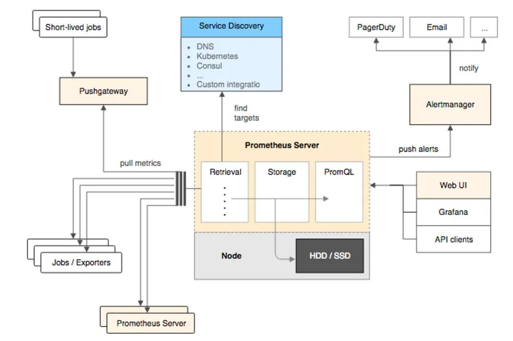
2-1 指标暴露
每一个被 Prometheus 监控的服务都是一个 Job，Prometheus 为这些 Job 提供了官方的 SDK ，利用这个 SDK 可以自定义并导出自己的业务指标，也可以使用 Prometheus 官方提供的各种常用组件和中间件的 Exporter（比如常用的 MySQL，Consul 等等）。
对于短时间执行的脚本任务或者不好直接 Pull 指标的服务，Prometheus 提供了 PushGateWay 网关给这些任务将服务指标主动推 Push 到网关，Prometheus 再从这个网关里 Pull 指标。
2-2 指标抓取
上面提到了 Push 和 Pull，其实这是两种指标抓取模型。
Pull 模型：监控服务主动拉取被监控服务的指标。
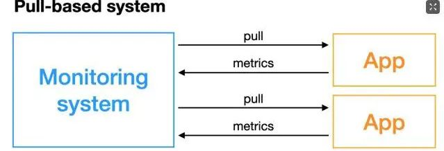
被监控服务一般通过主动暴露 metrics 端口或者通过 Exporter 的方式暴露指标，监控服务依赖服务发现模块发现被监控服务，从而去定期的抓取指标。
Push 模型：被监控服务主动将指标推送到监控服务，可能需要对指标做协议适配，必须得符合监控服务要求的指标格式。
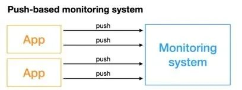
对于 Prometheus 中的指标抓取，采用的是 Pull 模型，默认是一分钟去拉取一次指标，
- 通过 Prometheus.yaml 配置文件中的
scrape_interval配置项配置，Prometheus 对外都是用的 Pull 模型 - 一个是 Pull Exporter 的暴露的指标，
- 一个是 Pull PushGateway 暴露的指标。
2-3 指标存储和查询
指标抓取后会存储在内置的时序数据库中，Prometheus 也提供了 PromQL 查询语言给我们做指标的查询，我们可以在 Prometheus 的 WebUI 上通过 PromQL，可视化查询我们的指标，也可以很方便的接入第三方的可视化工具，例如 Grafana。
2-4 监控告警
Prometheus 提供了 Alertmanageer 基于 PromQL 来做系统的监控告警，当 PromQL 查询出来的指标超过我们定义的阈值时，Prometheus 会发送一条告警信息到 Alertmanager，manager 会将告警下发到配置好的邮箱或者微信。
3 工作原理
Prometheus 的从被监控服务的注册到指标抓取到指标查询的流程分为五个步骤：
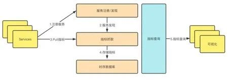
3-1 服务注册
被监控服务在 Prometheus 中是一个 Job 存在，被监控服务的所有实例在 Prometheus 中是一个 target 的存在，所以被监控服务的注册就是在 Prometheus 中注册一个 Job 和其所有的 target，这个注册分为：
- 静态注册
- 动态注册
静态注册：静态的将服务的 IP 和抓取指标的端口号配置在 Prometheus yaml 文件的 scrape_configs 配置下：
scrape_configs:
- job_name: "prometheus"
static_configs:
- targets: ["localhost:9090"]
以上就是注册了一个名为 Prometheus 的服务，这个服务下有一个实例，暴露的抓取地址是 localhost:9090。
动态注册：动态注册就是在 Prometheus yaml 文件的 scrape_configs 配置下配置服务发现的地址和服务名，Prometheus 会去该地址，根据你提供的服务名动态发现实例列表，在 Prometheus 中，支持 Consul、DNS、文件、Kubernetes 等多种服务发现机制。
基于 Consul 的服务发现：
- job_name: "node_export_consul"
metrics_path: /node_metrics
scheme: http
consul_sd_configs:
- server: localhost:8500
services:
- node_exporter
consul_sd_configs
我们 Consul 的地址就是：localhost:8500，服务名是 node_exporter，在这个服务下有一个 exporter 实例：localhost:9600。
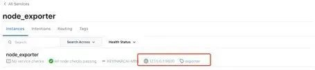
注意：如果是动态注册，最好加上这两配置，静态注册指标拉取的路径会默认的帮我们指定为 metrics_path:/metrics，所以如果暴露的指标抓取路径不同或者是动态的服务注册，最好加上这两个配置。
metrics_path: /node_metrics
scheme: http
不然会报错“INVALID is not a valid start token”，演示下，百度了一下，这里可能是数据格式不统一导致。
最后可以在 WebUI 中查看发现的实例：
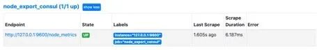
目前，Prometheus 支持多达二十多种服务发现协议：
<azure_sd_config>
<consul_sd_config>
<digitalocean_sd_config>
<docker_sd_config>
<dockerswarm_sd_config>
<dns_sd_config>
<ec2_sd_config>
<openstack_sd_config>
<file_sd_config>
<gce_sd_config>
<hetzner_sd_config>
<http_sd_config>
<kubernetes_sd_config>
<kuma_sd_config>
<lightsail_sd_config>
<linode_sd_config>
<marathon_sd_config>
<nerve_sd_config>
<serverset_sd_config>
<triton_sd_config>
<eureka_sd_config>
<scaleway_sd_config>
<static_config>
3-2 配置更新
在更新完 Prometheus 的配置文件后，我们需要更新我们的配置到程序内存里，这里的更新方式有两种，第一种简单粗暴，就是重启 Prometheus，第二种是动态更新的方式。
如何实现动态的更新 Prometheus 配置。
第一步：首先要保证启动 Prometheus 的时候带上启动参数：--web.enable-lifecycle。
prometheus --config.file=/usr/local/etc/prometheus.yml --web.enable-lifecycle
第二步：去更新我们的 Prometheus 配置。
第三步：更新完配置后，我们可以通过 Post 请求的方式，动态更新配置：
curl -v --request POST 'http://localhost:9090/-/reload'
原理：
Prometheus 在 Web 模块中，注册了一个 handler：
if o.EnableLifecycle {
router.Post("/-/quit", h.quit)
router.Put("/-/quit", h.quit)
router.Post("/-/reload", h.reload) // reload配置
router.Put("/-/reload", h.reload)
}
通过 h.reload 这个 handler 方法实现：这个 handler 就是往一个 channle 中发送一个信号：
func (h *Handler) reload(w http.ResponseWriter, r *http.Request) {
rc := make(chan error)
h.reloadCh <- rc // 发送一个信号到channe了中
if err := <-rc; err != nil {
http.Error(w, fmt.Sprintf("failed to reload config: %s", err), http.StatusInternalServerError)
}
}
在 main 函数中会去监听这个 channel，只要有监听到信号，就会做配置的 reload，重新将新配置加载到内存中：
case rc := <-webHandler.Reload():
if err := reloadConfig(cfg.configFile, cfg.enableExpandExternalLabels, cfg.tsdb.EnableExemplarStorage, logger, noStepSubqueryInterval, reloaders...); err != nil {
level.Error(logger).Log("msg", "Error reloading config", "err", err)
rc <- err
} else {
rc <- nil
}
3-3 指标抓取和存储
Prometheus 对指标的抓取采取主动 Pull 的方式，即周期性的请求被监控服务暴露的 Metrics 接口或者是 PushGateway，从而获取到 Metrics 指标，默认时间是 15s 抓取一次，配置项如下：
global:
scrape_interval: 15s
抓取到的指标会被以时间序列的形式保存在内存中，并且定时刷到磁盘上，默认是两个小时回刷一次。并且为了防止 Prometheus 发生崩溃或重启时能够恢复数据，Prometheus 也提供了类似 MySQL 中 binlog 一样的预写日志，当 Prometheus 崩溃重启时，会读这个预写日志来恢复数据。
4 Metric 指标
4-1 数据模型
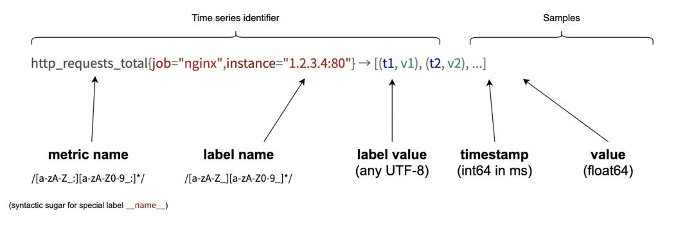
Prometheus 采集的所有指标都是以时间序列的形式进行存储，每一个时间序列有三部分组成：
- 指标名和指标标签集合：
metric_name{<label1=v1>,<label2=v2>....}，指标名：表示这个指标是监控哪一方面的状态，比如http_request_total表示请求数量；- 指标标签：描述这个指标有哪些维度，比如
http_request_total这个指标，有请求状态码code = 200/400/500，请求方式method = get/post等，实际上指标名称实际上是以标签的形式保存，这个标签是 name，即：name=。
- 指标标签：描述这个指标有哪些维度，比如
- 时间戳：描述当前时间序列的时间，单位：毫秒
- 样本值：当前监控指标的具体数值，比如
http_request_total的值就是请求数是多少。
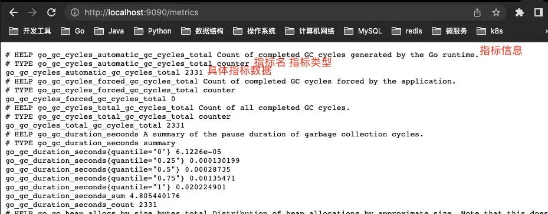
所有的指标也都是通过如下所示的格式来标识的：
# HELP // HELP：这里描述的指标的信息，表示这个是一个什么指标，统计什么的
# TYPE // TYPE：这个指标是什么类型的
<metric name>{<label name>=<label value>, ...} value // 指标的具体格式，<指标名>{标签集合} 指标值
4-2 指标类型
Prometheus 底层存储上其实并没有对指标做类型的区分，都是以时间序列的形式存储，但是为了方便用户的使用和理解不同监控指标之间的差异，
Prometheus 定义了 4 种不同的指标类型：计数器 counter，仪表盘gauge，直方图 histogram，摘要 summary。
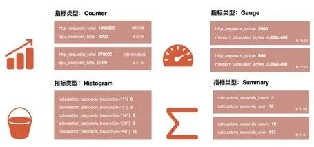
Counter 计数器：
Counter 类型和 Redis 的自增命令一样，只增不减，通过 Counter 指标可以统计 Http 请求数量，请求错误数，接口调用次数等单调递增的数据。同时可以结合 increase 和 rate 等函数统计变化速率，后续我们会提到这些内置函数。
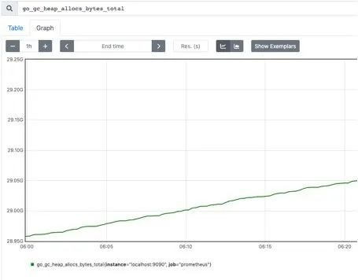
Gauge 仪表盘：
和 Counter 不同，Gauge 是可增可减的，可以反映一些动态变化的数据，例如当前内存占用，CPU 利用，Gc 次数等动态可上升可下降的数据，在 Prometheus 上通过 Gauge，可以不用经过内置函数直观的反映数据的变化情况，如下图表示堆可分配的空间大小：
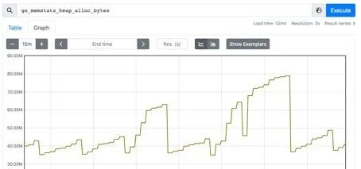
Histogram 直方图：
Histogram 是一种直方图类型，可以观察到指标在各个不同的区间范围的分布情况，如下图所示：可以观察到请求耗时在各个桶的分布。
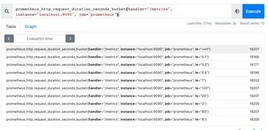
有一点要注意的是，Histogram 是累计直方图，即每一个桶的是只有上区间，例如下图表示小于 0.1 毫秒（le="0.1"）的请求数量是 18173 个，小于 0.2 毫秒（le="0.2"）的请求是 18182 个，在 le="0.2" 这个桶中是包含了 le="0.1"这个桶的数据，如果我们要拿到 0.1 毫秒到 0.2 毫秒的请求数量，可以通过两个桶想减得到。
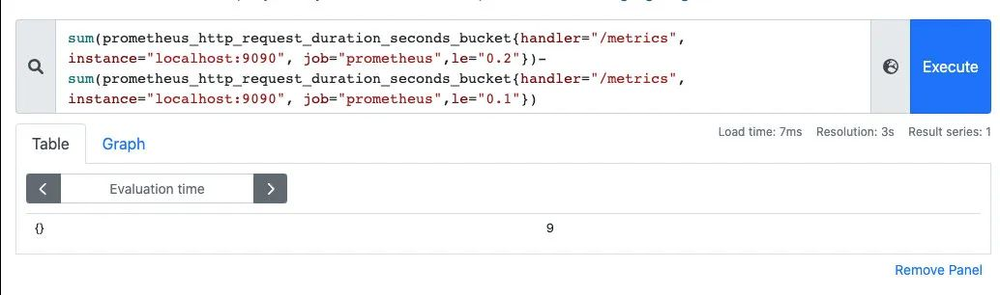
在直方图中，还可以通过 histogram_quantile 函数求出百分位数，比如 P50、P90、P99 等数据。
Summary 摘要：
Summary 也是用来做统计分析的，和 Histogram 区别在于，Summary 直接存储的就是百分位数，如下所示：可以直观的观察到样本的中位数，P90 和 P99。
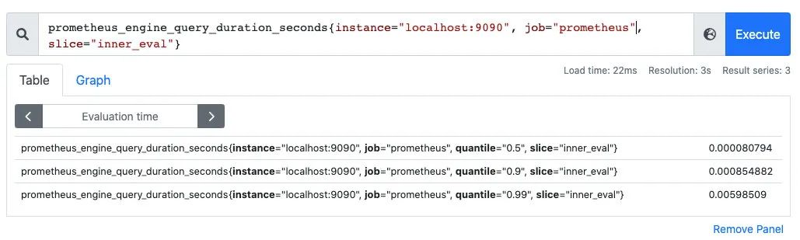
Summary 的百分位数是客户端计算好直接让 Prometheus 抓取的，不需要 Prometheus 计算，直方图是通过内置函数 histogram_quantile 在 Prometheus 服务端计算求出。
4-3 指标导出
标导出有两种方式，一种是使用 Prometheus 社区提供的定制好的 Exporter 对一些组件诸如 MySQL，Kafka 等的指标作导出，也可以利用社区提供的 Client 来自定义指标导出。
github.com/prometheus/client_golang/prometheus/promhttp
自定义 Prometheus exporter：
package main
import (
"net/http"
"github.com/prometheus/client_golang/prometheus/promhttp"
)
func main() {
http.Handle("/metrics", promhttp.Handler())
http.ListenAndServe(":8080", nil)
}
访问：http://localhost:8080/metrics，即可看到导出的指标，这里我们没有自定义任何的指标，但是能看到一些内置的 Go 的运行时指标和 promhttp 相关的指标，这个 Client 默认为我们暴露的指标，go_： 以 go 为前缀的指标是关于 Go 运行时相关的指标，比如垃圾回收时间、goroutine 数量等，这些都是 Go 客户端库特有的，其他语言的客户端库可能会暴露各自语言的其他运行时指标。
promhttp：来自 promhttp 工具包的相关指标，用于跟踪对指标请求的处理。
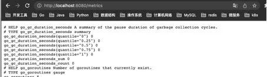
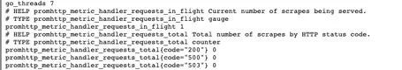
添加自定义指标：
package main
import (
"net/http"
"github.com/prometheus/client_golang/prometheus"
"github.com/prometheus/client_golang/prometheus/promhttp"
)
func main() {
// 1.定义指标（类型，名字，帮助信息）
myCounter := prometheus.NewCounter(prometheus.CounterOpts{
Name: "my_counter_total",
Help: "自定义counter",
})
// 2.注册指标
prometheus.MustRegister(myCounter)
// 3.设置指标值
myCounter.Add(23)
http.Handle("/metrics", promhttp.Handler())
http.ListenAndServe(":8080", nil)
}
运行：
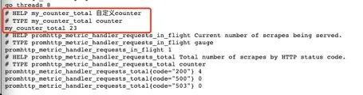
模拟下在业务中上报接口请求量：
package main
import (
"fmt"
"net/http"
"github.com/prometheus/client_golang/prometheus"
)
var (
MyCounter prometheus.Counter
)
// init 注册指标
func init() {
// 1.定义指标（类型，名字，帮助信息）
MyCounter = prometheus.NewCounter(prometheus.CounterOpts{
Name: "my_counter_total",
Help: "自定义counter",
})
// 2.注册指标
prometheus.MustRegister(MyCounter)
}
// Sayhello
func Sayhello(w http.ResponseWriter, r *http.Request) {
// 接口请求量递增
MyCounter.Inc()
fmt.Fprintf(w, "Hello World!")
}
main.go：
package main
import (
"net/http"
"github.com/prometheus/client_golang/prometheus/promhttp"
)
func main() {
http.Handle("/metrics", promhttp.Handler())
http.HandleFunc("/counter",Sayhello)
http.ListenAndServe(":8080", nil)
}
一开始启动时，指标 counter 是 0：
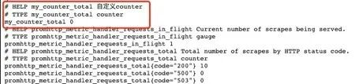
调用：/counter 接口后，指标数据发生了变化，这样就可以简单实现了接口请求数的统计：
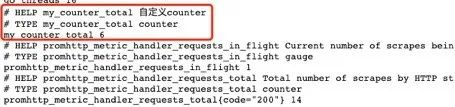
对于其他指标定义方式是一样的：
var (
MyCounter prometheus.Counter
MyGauge prometheus.Gauge
MyHistogram prometheus.Histogram
MySummary prometheus.Summary
)
// init 注册指标
func init() {
// 1.定义指标（类型，名字，帮助信息）
MyCounter = prometheus.NewCounter(prometheus.CounterOpts{
Name: "my_counter_total",
Help: "自定义counter",
})
// 定义gauge类型指标
MyGauge = prometheus.NewGauge(prometheus.GaugeOpts{
Name: "my_gauge_num",
Help: "自定义gauge",
})
// 定义histogram
MyHistogram = prometheus.NewHistogram(prometheus.HistogramOpts{
Name: "my_histogram_bucket",
Help: "自定义histogram",
Buckets: []float64{0.1,0.2,0.3,0.4,0.5}, // 需要指定桶
})
// 定义Summary
MySummary = prometheus.NewSummary(prometheus.SummaryOpts{
Name: "my_summary_bucket",
Help: "自定义summary",
// 这部分可以算好后在set
Objectives: map[float64]float64{
0.5: 0.05,
0.9: 0.01,
0.99: 0.001,
},
})
// 2.注册指标
prometheus.MustRegister(MyCounter)
prometheus.MustRegister(MyGauge)
prometheus.MustRegister(MyHistogram)
prometheus.MustRegister(MySummary)
}
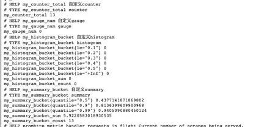
上面的指标都是没有设置标签的，我们一般的指标都是带有标签的，如何设置指标的标签呢？
如果我要设置带标签的 counter 类型指标，只需要将原来的 NewCounter 方法替换为 NewCounterVec 方法即可，并且传入标签集合。
MyCounter *prometheus.CounterVec
// 1.定义指标（类型，名字，帮助信息）
MyCounter = prometheus.NewCounterVec(
prometheus.CounterOpts{
Name: "my_counter_total",
Help: "自定义counter",
},
// 标签集合
[]string{"label1","label2"},
)
// 带标签的set指标值
MyCounter.With(prometheus.Labels{"label1":"1","label2":"2"}).Inc()
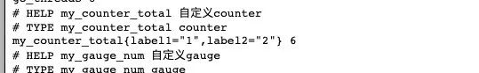
5 PromQL
刚刚提到了 Prometheus 中指标有哪些类型以及如何导出我们的指标，现在指标导出到 Prometheus 了，利用其提供的 PromQL 可以查询我们导出的指标。
PromQL 是 Prometheus 为我们提供的函数式的查询语言，查询表达式有四种类型：
- 字符串：只作为某些内置函数的参数出现
- 标量：单一的数字值，可以是函数参数，也可以是函数的返回结果
- 瞬时向量：某一时刻的时序数据
- 区间向量：某一时间区间内的时序数据集合
5-1 瞬时查询
直接通过指标名即可进行查询，查询结果是当前指标最新的时间序列，比如查询 Gc 累积消耗的时间：
go_gc_duration_seconds_count
我们可以看到查询出来有多个同名指标结果，可以用{}做标签过滤查询：比如我们想查指定实例的指标。
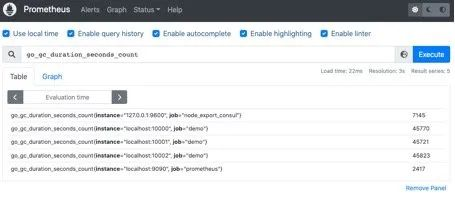
go_gc_duration_seconds_count{instance="127.0.0.1:9600"}
而且也支持则表达式，通过 =~指定正则表达式，如下所示：查询所有 instance 是 localhost 开头的指标。
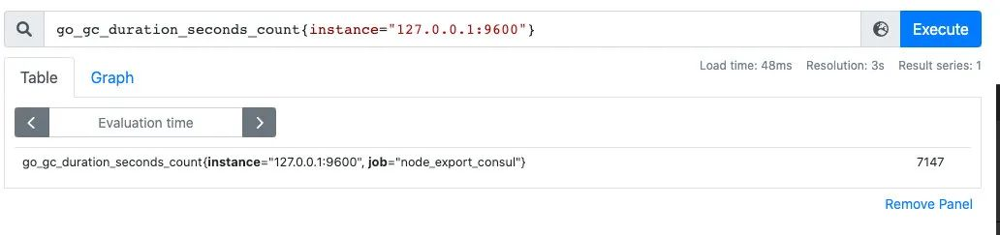
go_gc_duration_seconds_count{instance=~"localhost.*"}
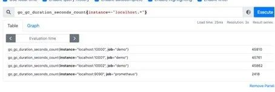
5-2 范围查询
范围查询的结果集就是区间向量，可以通过[]指定时间来做范围查询，查询 5 分钟内的 Gc 累积消耗时间：
go_gc_duration_seconds_count{}[5m]
注意：这里范围查询第一个点并不一定精确到刚刚好 5 分钟前的那个时序样本点，他是以 5 分钟作为一个区间，寻找这个区间的第一个点到最后一个样本点。
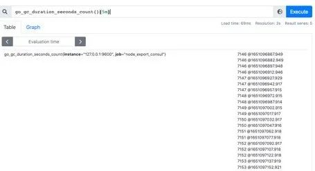
时间单位：
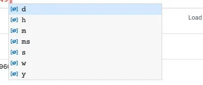
d：天，h：小时，m：分钟，ms：毫秒，s：秒，w：周，y：年
同样支持类似 SQL 中的 offset 查询，如下：查询一天前当前 5 分钟前的时序数据集：
go_gc_duration_seconds_count{}[5m] offset 1d
5-3 内置函数
Prometheus 内置了很多函数，这里主要记录下常用的几个函数的使用：
rate 和 irate 函数
rate 函数可以用来求指标的平均变化速率：rate函数=时间区间前后两个点的差 / 时间范围。
一般 rate 函数可以用来求某个时间区间内的请求速率，也就是我们常说的 QPS：
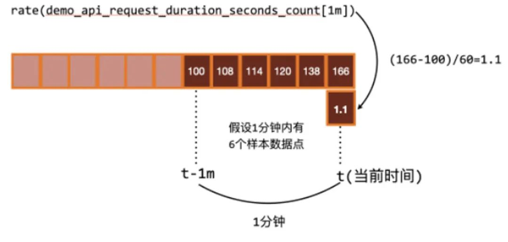
但是 rate 函数只是算出来了某个时间区间内的平均速率，没办法反映突发变化，假设在一分钟的时间区间里，前 50 秒的请求量都是 0 到 10 左右，但是最后 10 秒的请求量暴增到 100 以上，这时候算出来的值可能无法很好的反映这个峰值变化。
这个问题可以通过 irate 函数解决，irate 函数求出来的就是瞬时变化率。
时间区间内最后两个样本点的差 / 最后两个样本点的时间差。
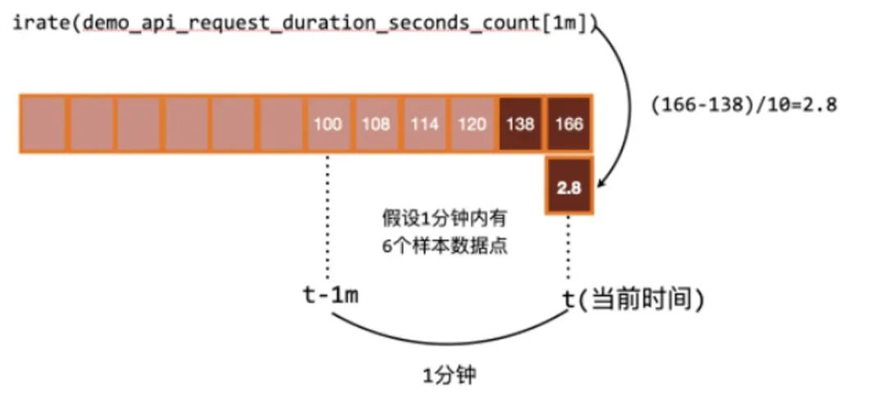
可以通过图像看下两者的区别：irate 函数的图像峰值变化大，rate 函数变化较为平缓。
rate 函数：
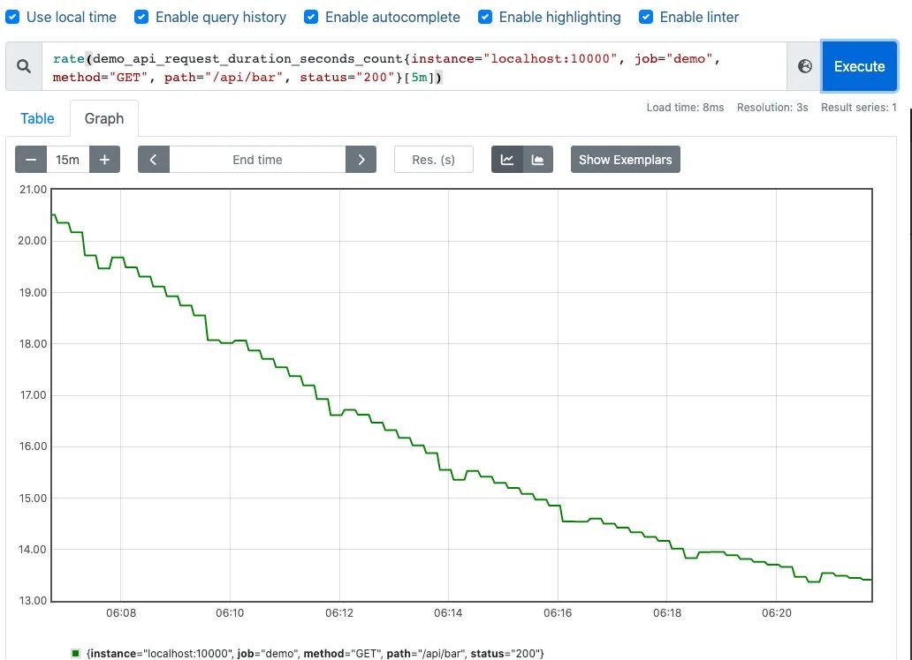
irate 函数：
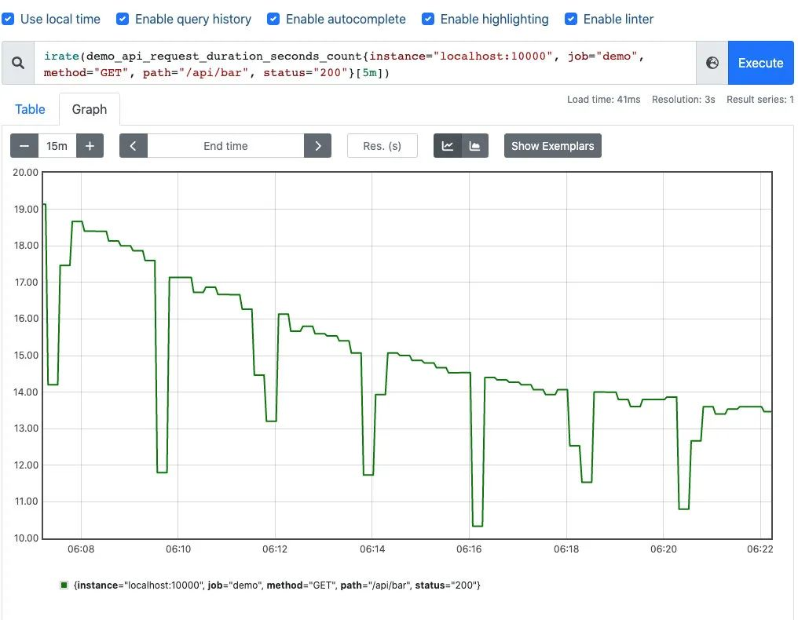
聚合函数：Sum() by() without()
也是上边的例子，我们在求指定接口的 QPS 的时候，可能会出现多个实例的 QPS 的计算结果，如下是存在多个接口，三个服务的 QPS。
rate(demo_api_request_duration_seconds_count{job="demo", method="GET", status="200"}[5m])
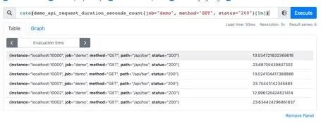
利用 Sum 函数可以将三个 QPS 聚合，即可得到整个服务该接口的 QPS：其实 Sum 就是将指标值做相加。
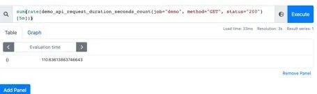
但是这样直接的相加太笼统抽象了，可以配合 by 和 without 函数在 sum 的时候，基于某些标签分组，类似 SQL 中的 group by。
例如，我可以根据请求接口标签分组：这样拿到的就是具体接口的 QPS：
sum(rate(demo_api_request_duration_seconds_count{job="demo", method="GET", status="200"}[5m])) by(path)
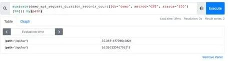
也可以不根据接口路径分组：通过 without 指定：
sum(rate(demo_api_request_duration_seconds_count{job="demo", method="GET", status="200"}[5m])) without(path)
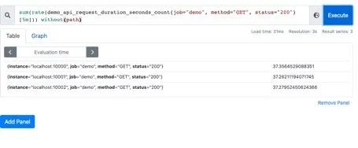
可以通过 histogram_quantile 函数做数据统计：可以用来统计百分位数：第一个参数是百分位，第二个 histogram 指标，这样计算出来的就是中位数，即 P50。
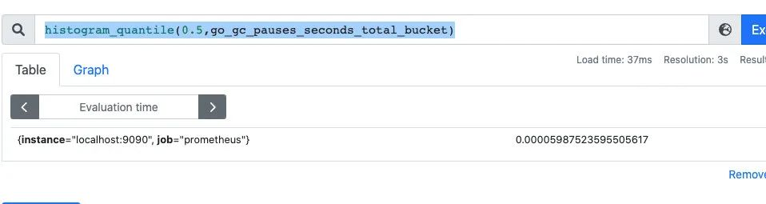
在刚刚写的自定义 exporter 上新增几个 histogram 的样本点：
MyHistogram.Observe(0.3)
MyHistogram.Observe(0.4)
MyHistogram.Observe(0.5)
自定义桶：
// 定义histogram
MyHistogram = prometheus.NewHistogram(prometheus.HistogramOpts{
Name: "my_histogram_bucket",
Help: "自定义histogram",
Buckets: []float64{0.1,0.2,0.3,0.4,0.5}, // 需要指定桶
})
上报数据：
MyHistogram.Observe(0.1)
MyHistogram.Observe(0.3)
MyHistogram.Observe(0.4)
重新计算 P50，P99：
histogram_quantile(0.5,my_histogram_bucket_bucket)
histogram_quantile(0.99,my_histogram_bucket_bucket)
桶设置的越合理，计算的误差越小。
6 Grafana 可视化
除了可以利用 Prometheus 提供的 webUI 可视化我们的指标外，还可以接入 Grafana 来做指标的可视化。
- 第一步，对接数据源： 配置好 prometheus 的地址
- 第二步，创建仪表盘：
- 编辑仪表盘
- 在 Metrics 处编写 PromQL 即可完成查询和可视化
- 仪表盘编辑完后，可以导出对应的 json 文件，方便下次导入同样的仪表盘：
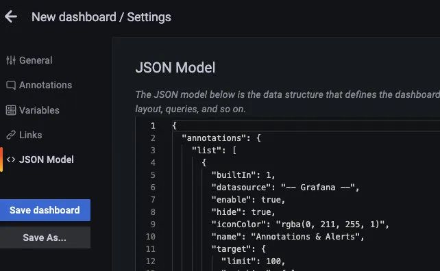
7 监控告警
AlertManager 是 Prometheus 提供的告警信息下发组件，包含了对告警信息的分组，下发，静默等策略。配置完成后可以在 WebUI 上看到对应的告警策略信息。告警规则也是基于 PromQL 进行定制的。
编写告警配置：当 Http_srv 这个服务挂了，Prometheus 采集不到指标，并且持续时间 1 分钟，就会触发告警。
groups:
\- name: simulator-alert-rule
rules:
\- alert: HttpSimulatorDown
expr: sum(up{job="http_srv"}) == 0
for: 1m
labels:
severity: critical
在 prometheus.yml 中配置告警配置文件，需要配置上 Alertmanager 的地址和告警文件的地址。
\# Alertmanager configuration
alerting:
alertmanagers:
\- static_configs:
\- targets: ['localhost:9093']
\# Load rules once and periodically evaluate them according to the global 'evaluation_interval'.
rule_files:
\- "alert_rules.yml"
\#- "first_rules.yml"
配置告警信息，例如告警发送地址，告警内容模版，分组策略等都在 Alertmanager 的配置文件中配置：
global:
smtp_smarthost: 'smtp.qq.com:465'
smtp_from: 'xxxx@qq.com'
smtp_auth_username: 'xxxx@qq.com'
smtp_auth_password: 'xxxx'
smtp_require_tls: false
route:
group_interval: 1m
repeat_interval: 1m
receiver: 'mail-receiver'
# group_by //采用哪个标签作为分组
# group_wait //分组等待的时间，收到报警不是立马发送出去，而是等待一段时间，看看同一组中是否有其他报警，如果有一并发送
# group_interval //告警时间间隔
# repeat_interval //重复告警时间间隔，可以减少发送告警的频率
# receiver //接收者是谁
# routes //子路由配置
receivers:
\- name: 'mail-receiver'
email_configs:
\- to: 'xxxx@qq.com'
当我 kill 进程：
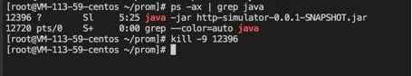
Prometheus 已经触发告警：
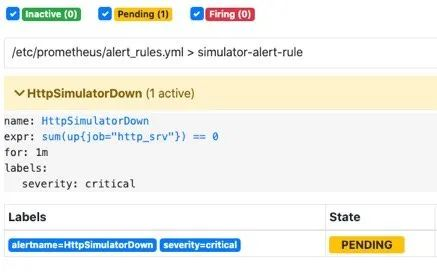
在等待 1 分钟，如果持续还是符合告警策略，则状态为从 pending 变为 FIRING 会发送邮件到我的邮箱。
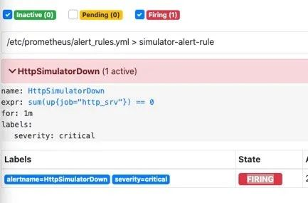
此时我的邮箱收到了一条告警消息：
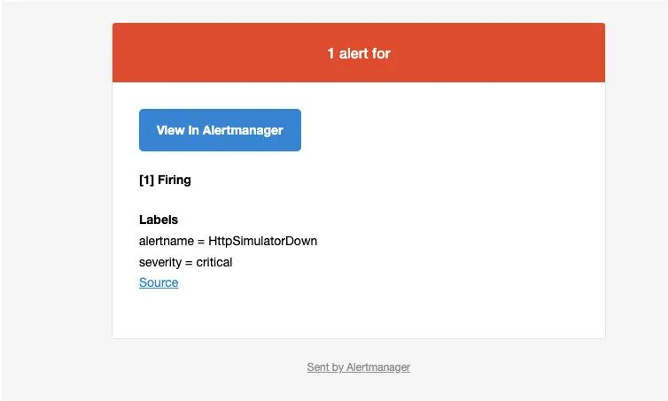
Alertmanager 也支持对告警进行静默，在 Alertmanager 的 WebUI 中配置即可：
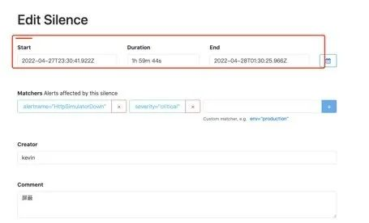
间隔了 4 分钟，没有收到告警，静默生效：
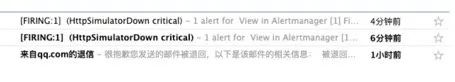
一个小时没有收到告警信息：
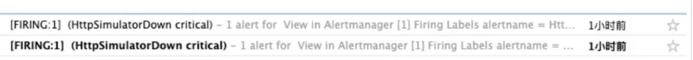